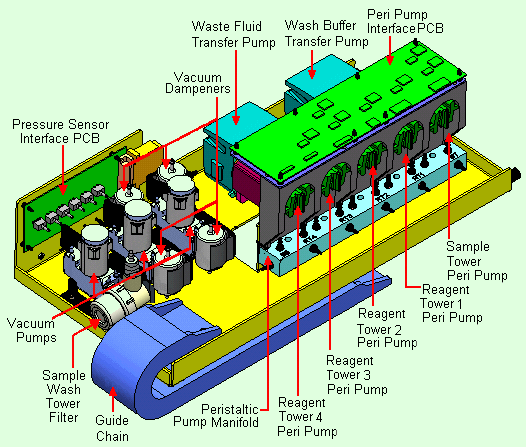

Vacuum System Operating Principles
Purpose
This document details the operating principles for the vacuum system.
Module Function
The vacuum system performs two functions in the instrument:
- Draws fluid from the wash towers (five for DxI 800, three for DxI 600) and sends the fluid to the intermediate waste container.
- Draws fluid from the probe wash manifold at aspirate probe 1 and sends the fluid to the intermediate waste container.
Location
Vacuum system components are scattered throughout the instrument:
- Vacuum lines from the wash towers (five for DxI 800, three for DxI 600) route to the vacuum pumps in the pull-out fluidics drawer located above the bulk waste fluid drawer.
- A vacuum line from the probe wash manifold on the aspirate probe plate routes to a vacuum pump in the pull-out fluidics tray located above the bulk waste fluid drawer.
- The vacuum pump outputs (six for DxI 800, four for DxI 600) are joined below the vacuum pumps and a single output line routes to the intermediate waste container located behind the liquid waste container drawer.
Operational Overview
The dual-head vacuum pumps (three for DxI 800, two for DxI 600) run continuously after a run is started. As the sample and reagent probes are washed internally and externally in the five wash towers, vacuum is applied to draw away wash buffer and any sample or reagent residue.
One of the heads on one of the vacuum pumps is dedicated to drawing fluid from the probe wash manifold at aspirate probe 1.
Sensors on the vacuum interface PCB monitor the vacuum pressure. The PCB is located in the fluidics drawer above the bulk waste fluid containers. If the vacuum pressure generated is outside specified levels, a software error is generated.
Component Locations


Component Functions
| Component | Description and Function |
|---|---|
| Manifold, Vacuum Pump | Collects output of all vacuum pumps into a single line that goes to the intermediate liquid waste container. |
| PCB, Interface, Fluidics Drawer | Electronic circuit that provides power for all motors in the fluidics drawer, including the vacuum pumps. |
| PCB, Interface, Pressure Sensor | Contains electronic circuits with pressure sensors that monitor the vacuum levels for each vacuum line. |
| Pump, Vacuum, Dual Head | Electrical mechanical device used to create a negative pressure. The developed negative pressure creates suction to remove fluids from specific areas in the DxI instrument. Each of the vacuum pumps in this system has two heads or pumps. |
Interacting Devices
The vacuum system interacts with these systems:
- Fluidics (at the wash towers)
- Waste (at the intermediate liquid waste container)
- Aspirate probe 1